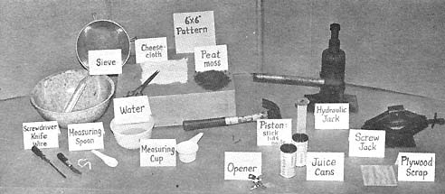
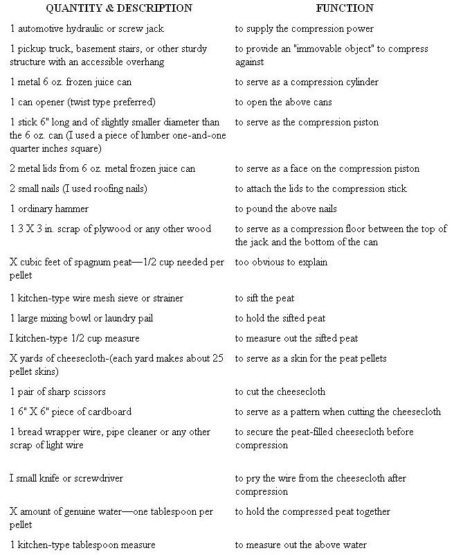
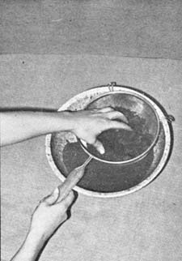
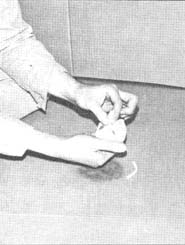
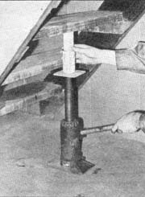
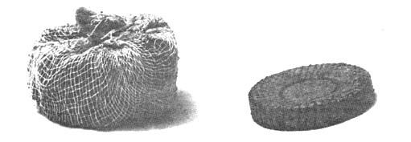
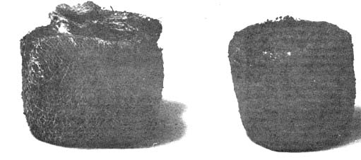

REMEMBER THOSE GREAT LITTLE PEAT PELLET PLANT STARTERS THAT JACK ROLAND COGGINS WROTE ABOUT IN MOTHER NO. 8 . . . GREAT, THAT IS, EXCEPT FOR THE NON-BIODEGRADEABLE NYLON THAT THE MANUFACTURER INSISTS ON WRAPPING THEM WITH. WELL, JOHN FUNK SAYS YOU CAN MAKE YOUR OWN-SWADDLED IN GOOD OLE ORGANIC COTTON CLOTH-RIGHT AT HOME. THEY WON'T BE AS PRETTY AS STORE-BOUGHT AND EVEN JOHN HOPES YOU'LL IMPROVE ON HIS IDEA . . . BUT IT'S A DARN GOOD START ON
The peat pellet article in Mother No. 8 really grabbed me. Here was technology at its best: a simple, convenient way to get around at least half the heavy directions and frightening illustrations tucked away in my innocent-looking new gardening books. Why, armed with ten or twelve dollars worth of pellets, even we city folk could easily get back to the land-by first bringing the land into the house. My head was off and running, and then . . . I stumbled into the author's note.
Plastic mesh! Peat pellets were a technical miracle all right . . . neatly packaged in an ecological disaster. Score another point for the opposition. I just couldn't see adding plastic to gardens when lawns and streets were already filled with the stuff. Write the manufacturer? Forget it. I had about decided to chuck the whole idea when another look at the gardening books convinced me that, if I had to have a garden, I had to have peat pellets. And I'd do away with the plastic by making my own.
In order to duplicate the little buggers I did buy one box of the ready-mades and found that peat pellets are actually flat peat discs. These discs look and feel as though they've died violently in a 50 ton hydraulic press but, with a little water, they instantly spring back to life as perfectly-shaped little peat pots.
Now the pellets I'm going to tell you how to make won't be quite that professional. They'll look more like a bloated poker chip than a disc and, once expanded, more like a meatball than a flower pot. But don't worry. They will do the job, and they won't leave a plastic shell behind-because they're "skinned" with genuine, old-fashioned, cotton cheesecloth. Come September, your pellets will each be a happily rotting mess!
I don't suppose you happen to own one of those aforementioned 50-ton presses. I sure don't, so I was forced to invent my very own Super-Special Tin Can Peat Pellet Mini-Press. The compression power is supplied by an automotive hydraulic jack working against a relatively immovable object like the underside of a pickup truck (most cars are too low to the ground) or the underside of basement stairs (an iron fire escape would be even better). I don't know if I have a "better" press-no one's beaten a path to my door-but the path to my garden leads all over the house to every available patch of sunlight.
Once you've set up your own mini-press, you'll be able to crank out pellets at the rate of one every two minutes. By the strict standards of a computer, I know this is darn slow; but the alternative-a monster machine and plastic in the garden-just ain't acceptable. Anyway, the list of materials and tools with this article contains everything you'll need. Scrounge the stuff together and let's begin..
Our mini-press needs only"one cylinder (a recycled tin can) and one piston (a wooden stick faced with the tops of two cans). It's quite easy to build.
First, the hard part. Open two frozen juice cans and drink the contents. Save both lids, but forget about or put aside one can. The remaining can is now called a compression cylinder.
To make the piston, place the two lids together, start two nails through them near the center and nail the lids to the bottom of the 6-inch-long stick. The resulting piston should be able to slide in and out of the can without binding.
That's it! That's the heart of your peat press.
OTHER PREPARATIONS
Spagnum contains a lot of roots, twigs, and other organic matter and will not compress without first being sifted. Sift tree stuff through a wire mesh sieve into a large mixing bowl, and throw the leftover debris into your garden or compost. Now put the bowl aside, or better yet, con someone else into continuing the job while you go on to fight with the cheesecloth.
Cheesecloth has got to be the softest, most difficult-to-work-with material I have ever seen. Unless you have a very large table, work on the floor. Otherwise you'll wear yourself out just trying to keep the miserable stuff on your work surface. Since it's almost impossible to mark cheesecloth, you'll have to resort to the old trick of making a pattern to cut the material around. A 6-inch square of cardboard works nicely for this.
Slip the square pattern under one edge of the cheesecloth and start cutting . . . don't worry, you'll be able to see the cardboard very well. If you insist on putting the pattern on top, go ahead but you won't be able to see the cloth and it will really squirm when you start hacking. Since cheesecloth comes 34 inches wide, each yard will yield 25 squares plus a strip of scrap 4" wide.
After you have successfully cut out a couple yard's worth of squares, you can go on to setting up the mini-press and mashing a few pellets.
PRODUCTION
This is the really fun job which everybody tries to corner for himself. If you're working with others, begin immediately while they're busy sifting and cutting, and you'll be into it really heavy before they discover what you're up to.
First put one tablespoon of water in the compression cylinder. Now lay down a cheesecloth square, measure out 1/2 cup of tightly-packed peat and carefully dump the mess into the cloth's center. Gather together each of the four corners of the cloth to form a kind of square bag with side slits and twist the bag until you've closed the slits. Secure the loose ends with a piece of wire, half a pipe cleaner or a bread wrapper twist and very gently squeeze the peat bag, wired side up, into the compression cylinder.
Now for the action. Set the cylinder and contents on the 3" X 3"-square piece of wood, and place both on the business end of the jack. Lower the piston into place and begin pumping the jack's handle or turning the screw on a screw jack. You'll have to hold the cylinder with your other hand until the top of the piston makes contact with the truck or whatever you're compressing against. Increase the pressure gradually. Remember, you're only trying to press a little peat . . . not jack up the truck or rip out the stairs.
You can determine proper pressure by grasping the cylinder and trying to pull it sideways. Can you pull it away from the jack? If not, you've probably got enough pressure.
Now wait at least two minutes while the old pounds-per-square-inch formula does the job on the peat. If you're the type who can't stand waiting-not even for two minutes-you can use the time to good advantage by locating the other juice can, dumping in the water, and stuffing peat bag down its throat. Okay, time's up. Release the jack, remove the piston, and take a peek.
You should be looking at a white mass at the very bottom of the cylinder and-hopefully-you'll be able to see the wire you used to tie the bag. With a knife or screwdriver, carefully pry the pellet from the cylinder, untie the wire . . . and you're done!
Now when you pull a peat pellet off the shelf for a fast and neat planting job, you'll be sure you're pressing your favorite seed into a completely bio-degradable home-made miracle.
|
 BOTTOM: Sifting the MOSS. |
 Cutting cheesecloth with the pattern. |
 Gathering the corners of a filled square. |
|
The Fun Part! |
 A comparison of one compressed hand-rolled and one compressed tailor-made peat pellet. |
 The two pellets expanded. |
|
 |
 |
|